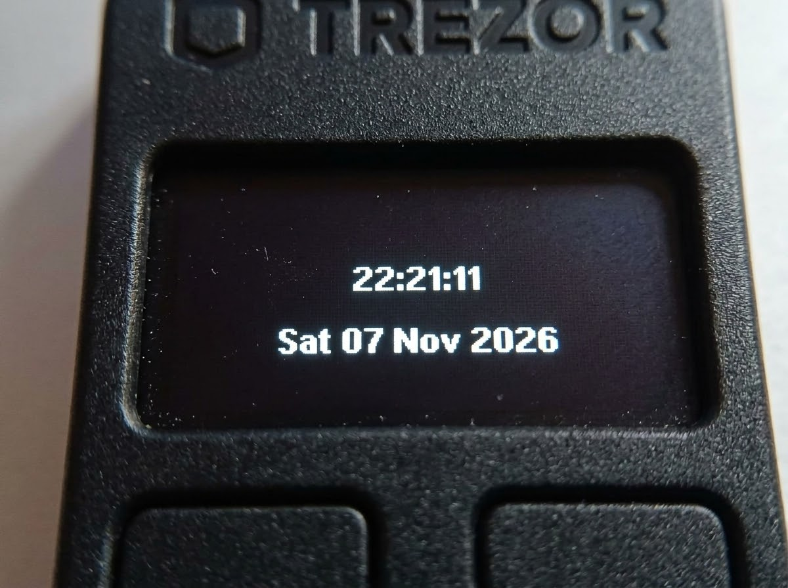
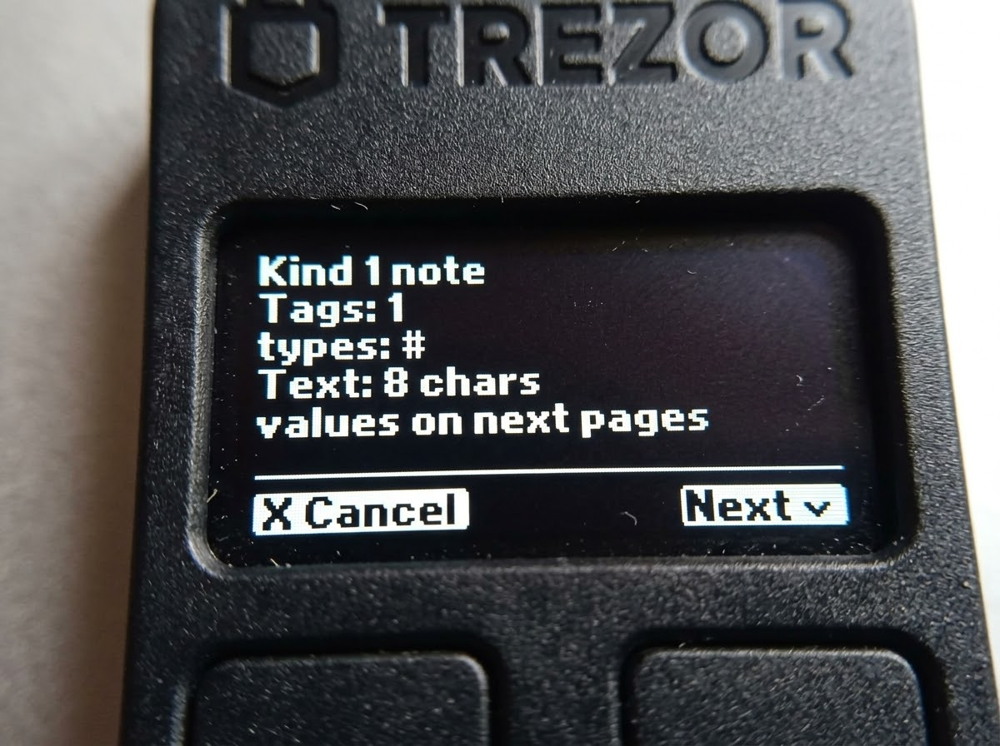
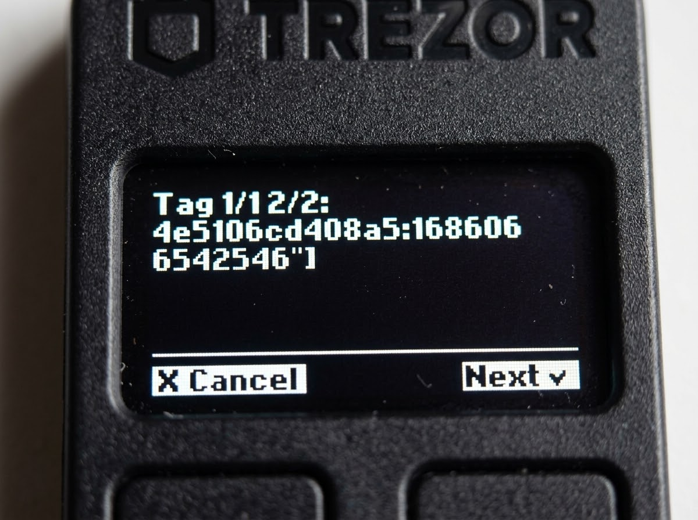
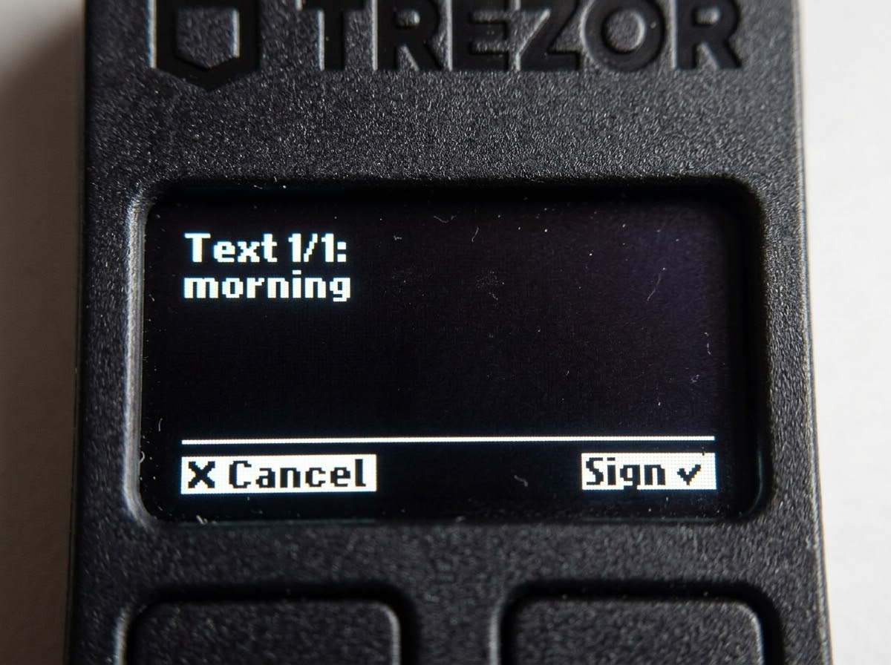
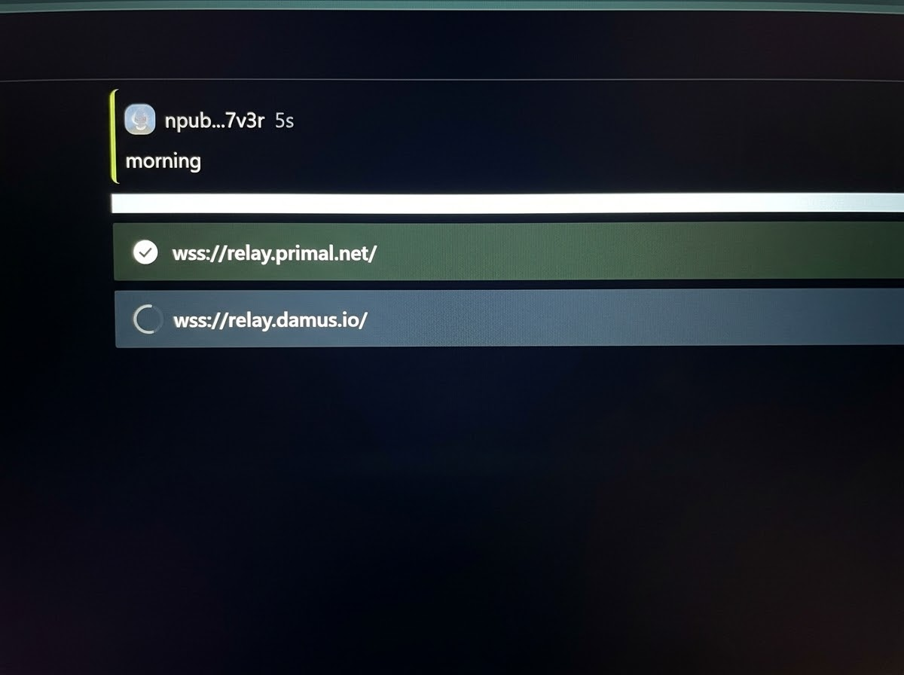
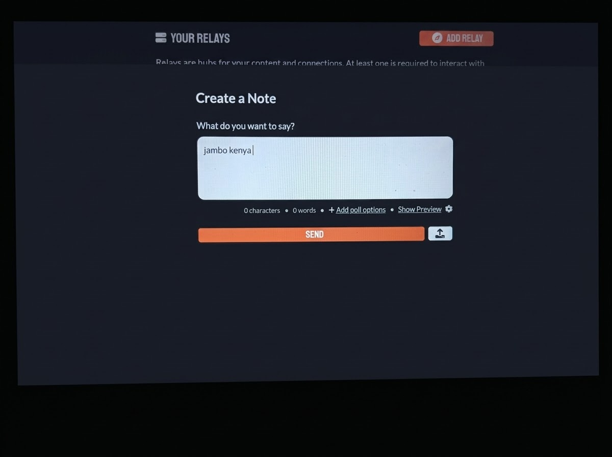
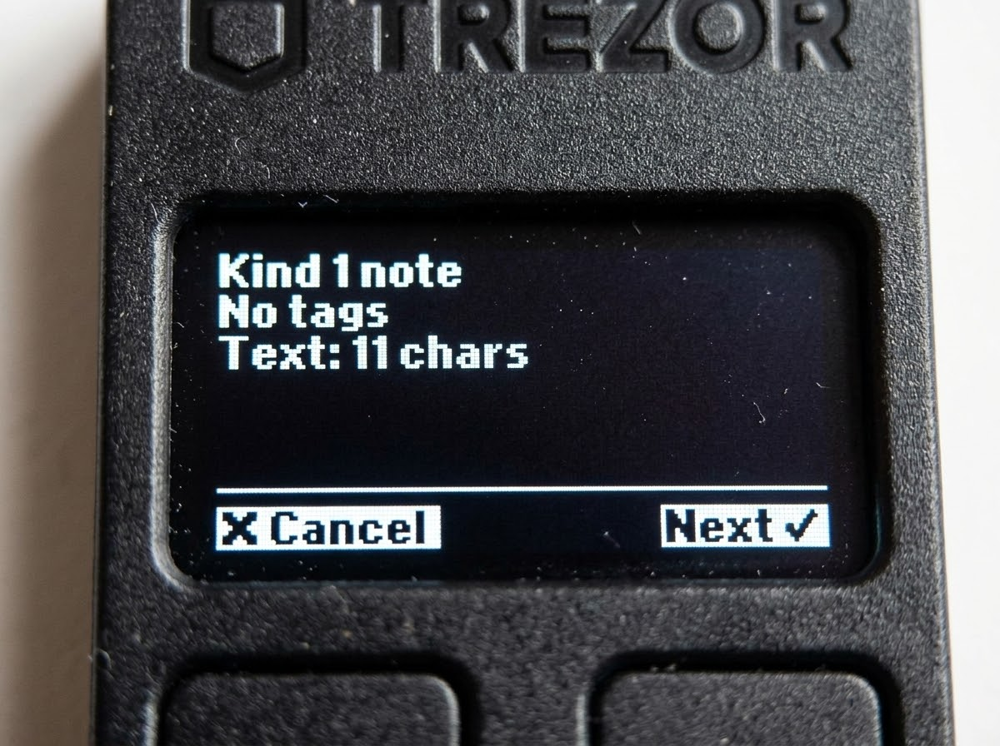
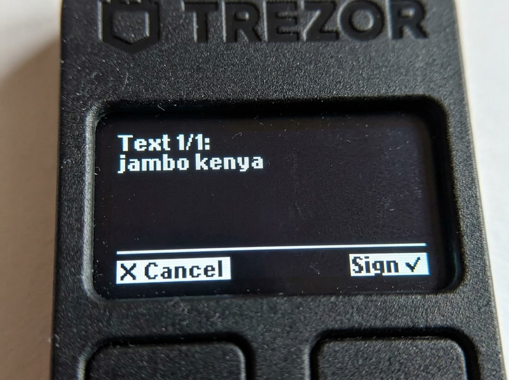
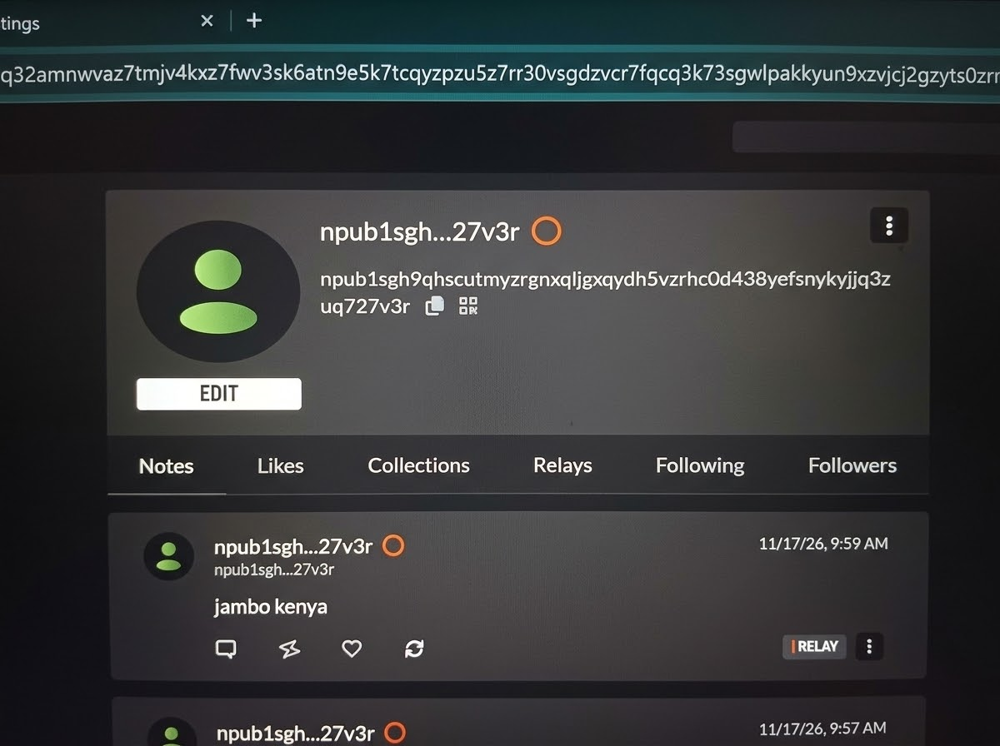

Signing Nostr events with a hardware wallet: a lab experiment
I patched the legacy firmware of a Trezor Model One so it can sign Nostr events. The device shows the whole event on its screen and signs only after I press a button. A small Python bridge lets real Nostr clients ask for signatures over NIP-46.
The first review page on the device, before the text and tags are shown in full.
This is a lab experiment. Do not use it for real funds or a real Nostr identity.
- The firmware is unofficial, unsigned and unaudited.
- Flashing it erases everything stored on the device, every time.
- The Model One has no secure element and a known physical-extraction weakness.
- Use a spare device and throwaway keys. No firmware binaries are published, so you must build your own.
This project is independent. It is not affiliated with, endorsed by or supported by SatoshiLabs or Trezor. TREZOR and TREZOR ONE are registered trademarks of SatoshiLabs Group a.s. “For Trezor Model One” is used only to say which hardware this runs on.
Why I built it
A Nostr identity is a key, and most people keep it in a browser extension or a phone app. A hardware wallet can protect a key much better, but stock Trezor firmware does not sign Nostr events. I wanted to see how far a small, readable patch could go: keep the key on the device, show exactly what is signed, and work with existing clients through a standard protocol instead of a custom app.
How it works
There are three pieces: firmware patches, host tools that talk to the device with trezorctl, and a NIP-46 bridge that runs on the PC with the Trezor attached.
The client asks the bridge to sign an event. The bridge checks its policy and sends the exact NIP-01 serialization to the device. I read the event on the screen. The right button signs or moves to the next page, and the left button cancels. The Nostr private key never leaves the device, and there is no auto-approve anywhere.
Experiment one: a clock
The first patch had nothing to do with Nostr. It turns the home screen into a clock, and it was the first test of the whole pipeline: building the firmware, flashing it, and sending a custom command to the device over USB.

The home screen shows large HH:MM:SS and a date line, with no logo or URL. The Model One has no real-time clock, so it starts from the build time and counts forward until the PC sets the time. The command is SETTIME <utc_unix_seconds> [<utc_offset_seconds>], and it travels inside a normal Ping message, so no protobuf changes are needed. The repo includes settime.ps1 and settime.sh to send the current time after each plug-in.
Two caveats. The command is unauthenticated, so anyone with USB access can set the clock. And the time lives in RAM, so unplugging the device loses it. The emulator build uses the host clock until a time is sent.
Experiment two: the Nostr signer
The patches apply to upstream trezor-firmware at commit 9d4f7db2b06fc91e2b5d64d6d6426fb0cd44a3d7 (6 November 2026), legacy firmware, built unsigned with PRODUCTION=0. They go on in order:
- A clock home screen with the time set over USB, since the Model One has no real-time clock.
- The Nostr signer: public key, event signing and the on-device review pages.
- A mode toggle: the right button switches between the clock and a NOSTR SIGNER panel.
To avoid changing protobuf messages, commands travel as text inside the normal Ping message. NOSTRPUB returns the x-only public key for the NIP-06 path m/44'/1237'/0'/0/0. NOSTREV BEGIN, ADD and SIGN transfer an event in chunks and return the id and BIP-340 signature after approval. The device signs the sha256 of exactly what it displayed.
What the review shows
- A summary page with the kind, number of tags, tag names and text length.
- One page per tag.
- Pages for the text, ending with a Sign button.



Limits: ASCII only, content up to 400 characters, up to 20 tags, whole event up to 900 bytes. The bridge refuses anything the device cannot show in full instead of trimming it, because a trimmed review would not be a real review.
The bridge
tools/nostr_bridge.py is the signer side of NIP-46. It keeps its own transport key and connection secret in a local file that is never committed, and it prints a bunker:// link to paste into a client. It supports connect, get_public_key, sign_event and ping. Everything else is refused, including NIP-04 and NIP-44 encryption, because the device cannot do the ECDH those need.
Real clients forced two policy features:
- Allowed kinds. Only kinds 1 and 7 are forwarded to the device by default.
- Relay login. Coracle sent a NIP-42 login request (kind 22242) for every relay, and each would have been a device prompt. The bridge now refuses these unless a relay is allowlisted.
noStrudel also sent two identical sign requests and produced two identical notes. The bridge now allows one device prompt per identical kind, tags and content inside a time window and reuses the first signed event for a retry.
What was tested
Checked on real hardware or with real clients
- Kind 1 events with tags were signed on the device. I reviewed every page, and checked several signed events independently: the id matches the sha256 of the NIP-01 serialization and the BIP-340 signature is valid.
- My NIP-44 module passes all 155 official test vectors.
- The bridge selftest passed on relay.primal.net and relay.snort.social.
- Coracle and noStrudel both logged in through the bunker link and published notes.
- After the policy and duplicate fixes, both clients gave one device review and one note per post, and no relay-login prompts reached the device.
- The clock home screen runs on the device and takes its time from
SETTIME. - The home-screen mode toggle works on the device.

Coracle gave the same result for a plain note with no tags. I typed a short note, pressed Send, and the device showed its own summary before anything was signed.




Not tested
nostrconnect://login, Amethyst and Jumble.switch_relayshandling and a persistent device connection.
Relay reliability varied: nos.lol dropped a request, relay.nsec.app timed out and relay.damus.io returned HTTP 521 once. A single relay is the most dependable setup.
Limits and lessons
Security model
The key stays on the device and every signature is approved on its screen. The USB command channel is unauthenticated, so anything that can reach the device can ask it to sign, but it still cannot sign without a button press. The firmware has not been audited.
Known limits
- Only
bunker://links work. Clients that offer onlynostrconnect://will not connect. - No direct messages and no encryption methods.
- A raw nsec cannot be imported, only a key derived from a NIP-06 mnemonic.
- Signing is slow because
trezorctlstarts several times per request. - Builds are not reproducible, because the build date and time are compiled in.
Lessons
- Clients behave differently, so the policy layer matters as much as the cryptography.
- A summary is not a review. The device shows every tag and all of the text.
- Public relays keep what you post. Two early duplicate test notes cannot be reliably deleted.
- Unsigned firmware erases the device’s stored data on every flash, so use a test device with nothing you care about.
Try it
The repository README has the full steps. In short:
git apply patches/01-clock.patch
git apply patches/02-nostr-signer.patch
cd legacy && export PRODUCTION=0
python tools/nostr_bridge.py --relay wss://relay.primal.netBuild and flash a spare test device, set up a throwaway test key on it, run the bridge and paste the bunker:// link into a supported client. The repo also has ARCHITECTURE, BRIDGE, TESTING, KNOWN-LIMITS and SECURITY documents.
Spending ecash with the device
The same device can sign the spend of Cashu ecash locked to its key. It was tested on a local test mint only. Read the Cashu write-up.
Licensing and security reports
The patches and scripts are LGPL-3.0, matching the legacy part of upstream trezor-firmware. The tools, including the bridge, are MIT, copyright Codepocketdev. This is not legal advice. Report vulnerabilities in upstream Trezor firmware to security@satoshilabs.com. For this repository, open a GitHub issue that contains no secrets.